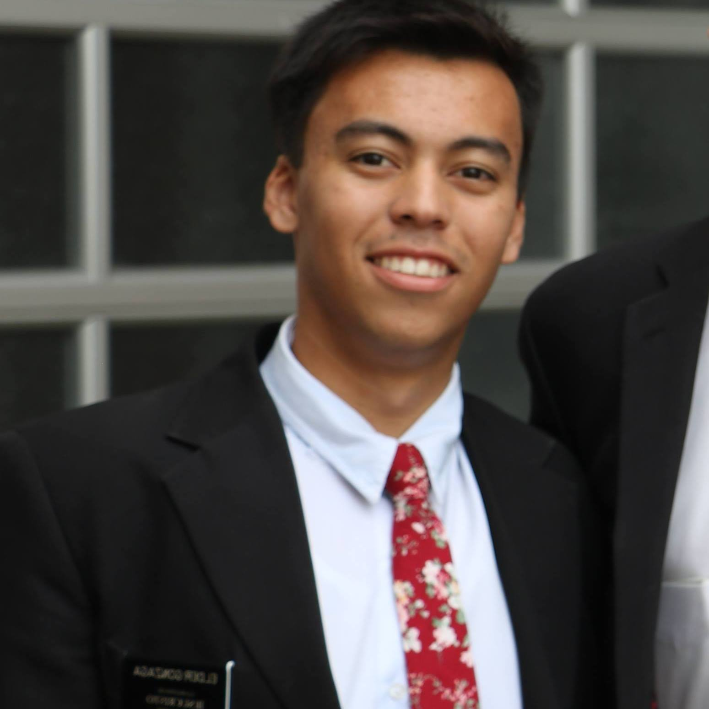

Guilherme Martinez Gonzaga
Hello! I'm Guilherme Gonzaga, an aspiring frontend developer excited to dive into the dynamic world of digital experience creation. With budding skills in HTML, CSS, and JavaScript, I eagerly embrace each challenge as an opportunity for growth and learning. I'm passionate about crafting user-centric designs that seamlessly blend aesthetics and functionality to deliver captivating experiences. Thriving in collaborative environments, I enjoy contributing my insights and skills to innovative projects that push the boundaries of digital design. Looking ahead, I'm committed to leveraging my evolving skill set to create impactful and meaningful digital solutions that resonate with users worldwide. Let's embark on this exhilarating journey together and create something truly extraordinary!